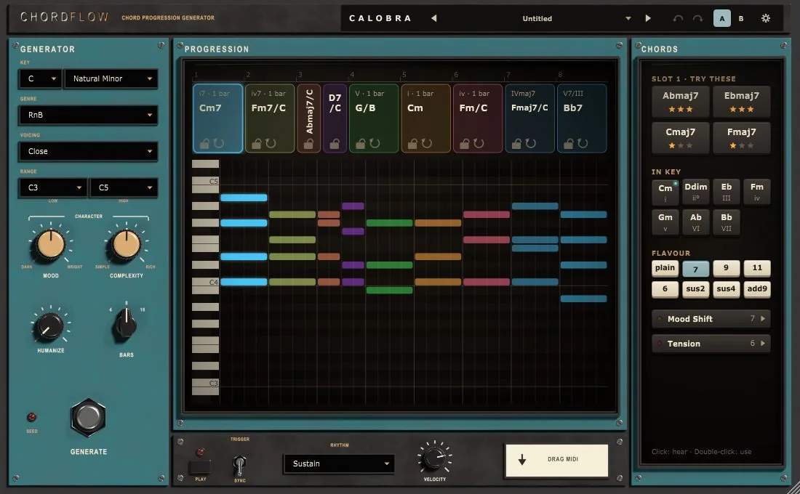

← All plugins
Chord generator · MIDI
chordflow.
Pick a key and a genre, press Generate, and get a progression that sounds like the genre. Drag it into your DAW. No theory needed.
- Formats
- VST3 · App
- Genres
- 9
- Length
- 4 · 8 · 16 bars

Listen
hear it first.
Demos played through ChordFlow, straight out of the plugin.
Workflow
generate, then make it yours.
- Set the key and genre. Ten scales, from major and minor to Dorian, Lydian and both pentatonics.
- Dial Mood and Complexity. Mood runs dark to bright. Complexity runs from plain triads to 9ths, 11ths and 13ths.
- Press Generate. The timeline fills with chords, each slot as wide as it lasts.
- Lock what you like, re-roll the rest. Pick a slot and the drawer suggests chords that fit, ranked by stars.
- Drag MIDI into your DAW, or let it play in sync with the host.
- Save it to your library. The preset menu also keeps your last 20 generations, so a good idea is never lost.
Genre profiles
nine genres, each with its own taste.
Each genre sets which chord colours come up and how often the chords change.
| Genre | Chord colours it reaches for | Chords change |
|---|---|---|
| Pop | add9, 7ths, sus2 and sus4 | Mostly every bar |
| EDM | sus2 and sus4, add9 | Every bar, sometimes two |
| House | minor 7ths, 9ths, sus4 | Mostly every bar |
| RnB | 9ths, maj7 and 7ths, 11ths | Every bar, often every half bar |
| Neo-soul | 9ths, 11ths, maj7, 13ths | Every bar or half bar |
| Jazz | 7ths and maj7, 9ths, 13ths, ♭9 on dominants | Often every half bar |
| Lo-fi | maj7 and 7ths, 9ths | Mostly every bar |
| Trap | Plain triads, a sparse add9 | Every one or two bars |
| Cinematic | Plain triads, add9, sus2 | Mostly every two bars |
Playback
ten rhythms, four voicings.
Rhythm turns the progression into notes, for playback and for Drag MIDI alike. Humanize nudges timing and velocity, and the same take plays back every time.
- Sustain
- Stabs 1/4
- Stabs 1/8
- Offbeat
- Strum Up
- Strum Down
- Arp Up
- Arp Down
- Arp Up-Down
- Pulse 1/16
- Close
- Open
- Spread
- Drop-2